垄断：市场势力、福利成本与价格歧视
垄断的成因（进入壁垒、自然垄断）、为什么垄断者没有供给曲线、MR< P 的含义、垄断的福利成本与公共政策（反垄断、管制、公有），以及三级价格歧视。
本讲要点
- 进入壁垒
- 自然垄断
- MR 与需求弹性
- MR=MC 定价
- 垄断的无谓损失
- 反垄断与管制
- 一/二/三级价格歧视
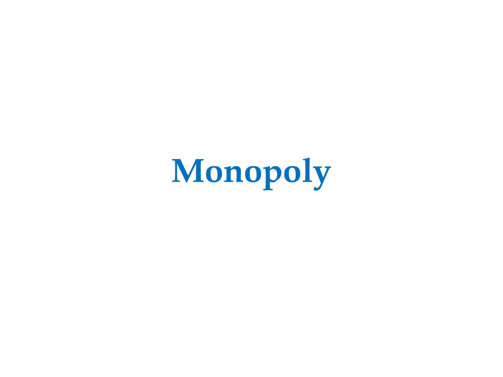
标题页：垄断（Monopoly）。
这是市场结构谱系的另一端。上一讲我们站在完全竞争的极端——无数小厂商，人人都是价格接受者；这一讲走到对面——市场上只有一个卖者。
整讲的路线图：先定义垄断，再解释它凭什么存在（进入壁垒），然后把垄断者的边际收益拆成两半，得到 MR = MC 的定价法则，最后用福利分析和价格歧视收尾。
提醒一句：这一讲的每个结论都要和完全竞争的基准对照着读，否则你会觉得它只是"另一套图"。
幻灯片原文 / 板书
Monopoly
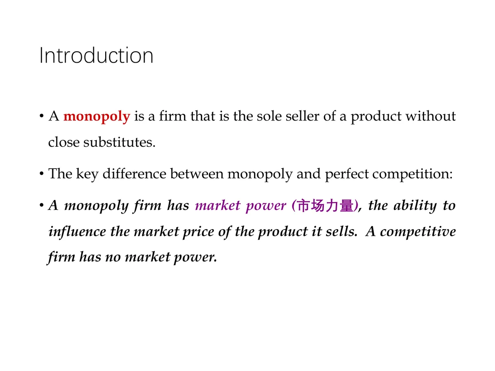
定义页。垄断是某产品的唯一卖者，且该产品没有相近的替代品（without close substitutes）。
两个条件缺一不可：
- 唯一卖者：市场上没有第二家供货。
- 无相近替代品：否则买者会跑掉。你涨价，人就走了，你的"唯一"是假的。
与完全竞争的关键差别在市场力量（market power）——影响自己产品市场价格的能力。竞争厂商没有市场力量，只能接受市价；垄断者有，它可以"定价"。
老师补充：现实里纯粹的垄断很少见，判断标准是替代性有多近。某个牌子的矿泉水是它自己商标的唯一卖者，但货架上一排竞品就是替代品，所以它没有垄断力量。
幻灯片原文 / 板书
Introduction • A monopoly is a firm that is the sole seller of a product without close substitutes. • The key difference between monopoly and perfect competition: • A monopoly firm has market power (市场力量), the ability to influence the market price of the product it sells. A competitive firm has no market power.
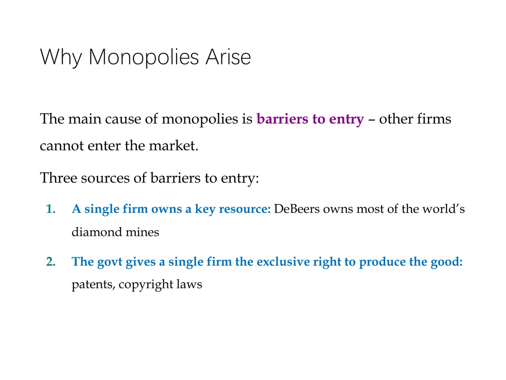
进入壁垒（barriers to entry）：其他厂商进不来，才是垄断能维持的原因。
注意逻辑顺序：唯一卖者只是结果，"进不来"才是原因。如果没有壁垒，超额利润会招来进入者，垄断自己就瓦解了。
课件列了三个来源，本页讲前两个：
- 关键资源所有权：一家厂商掌握生产所必需的资源。例：DeBeers 拥有世界上大部分钻石矿。
- 政府授予的排他权：专利（patents）与版权（copyright）——法律直接禁止别人生产同样的东西。
老师补充：第一类在现代经济中越来越少见（资源可以进口、可以替代）；第二类是人造壁垒，而且是有意设计的——用一段时期的垄断利润回报创新者。这笔账我们在第 12 页的药品案例里算。
幻灯片原文 / 板书
Why Monopolies Arise The main cause of monopolies is barriers to entry – other firms cannot enter the market. Three sources of barriers to entry: 1. A single firm owns a key resource: DeBeers owns most of the world’s diamond mines 2. The govt gives a single firm the exclusive right to produce the good: patents, copyright laws
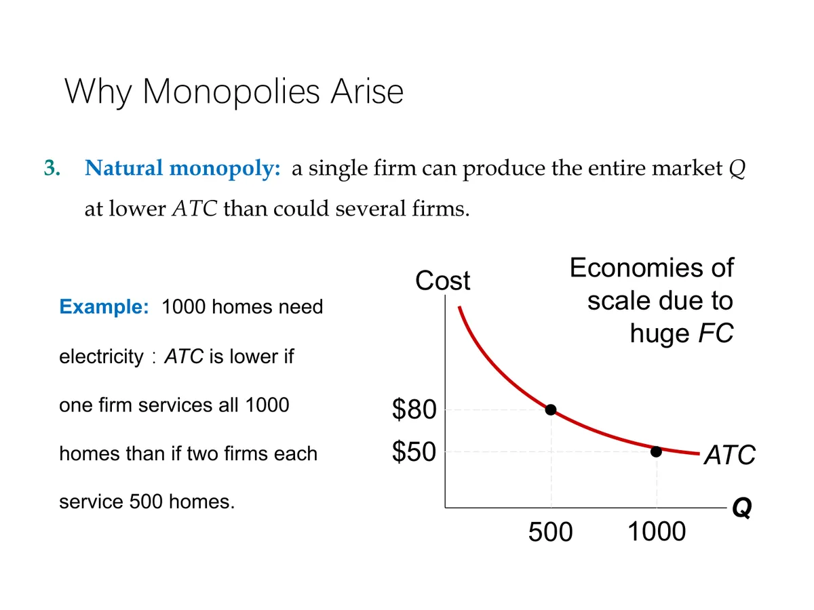
第三个来源：自然垄断（natural monopoly）——由一家厂商生产整个市场的产量，其平均总成本（ATC）比由几家厂商分摊更低。
读图：纵轴是成本，横轴是户数（Q）。红色 ATC 曲线一路向下，因为固定成本巨大（铺电网、铺管网），服务的户数越多，每户摊得越薄。
- 两家各服务 500 户：ATC = \$80。
- 一家服务 1000 户：ATC = \$50。
所以在这里，竞争是浪费：两条电网重复铺设，单位成本反而更高。结论是技术条件本身把市场"锁定"在一个卖者身上。
老师补充：自然垄断的根源是固定成本大、边际成本小，于是 ATC 持续下降、MC 始终低于 ATC。记住这半句，第 16 页的管制难题就是它的直接后果。
幻灯片原文 / 板书
Why Monopolies Arise 3. Natural monopoly: a single firm can produce the entire market Q at lower ATC than could several firms. Q Cost ATC 1000 $50 Example: 1000 homes need electricity：ATC is lower if one firm services all 1000 homes than if two firms each service 500 homes. Economies of scale due to huge FC 500 $80
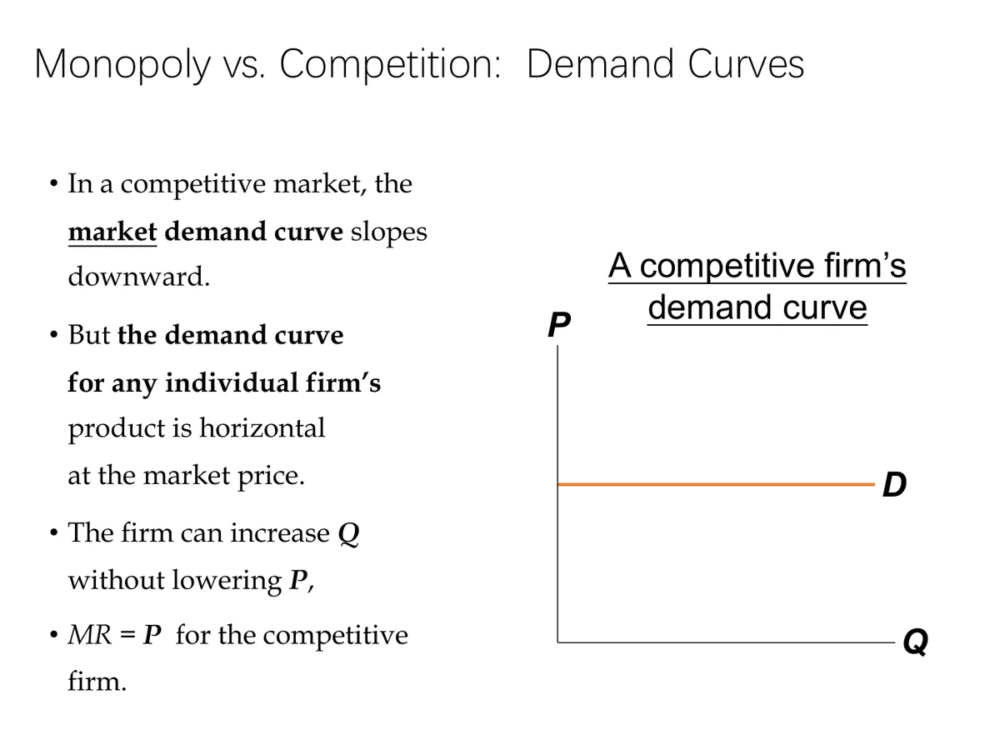
对照组：完全竞争厂商面对的需求曲线。
- 整个市场的需求曲线向下倾斜——价格越高，所有人买得越少。
- 但单个厂商面对的需求曲线是水平的（horizontal），高度由市场价决定：它是价格接受者，按市价想卖多少卖多少。
- 所以多卖一单位不必降价，边际收益（marginal revenue，MR）就等于价格：MR = P。
图中：横轴 Q、纵轴 P，一条水平线，标注"a competitive firm's demand curve"。
老师补充：这条水平线其实是弹性无穷大——你只要比市价高一点点，销量立刻归零。这就是"没有市场力量"的图形含义。
幻灯片原文 / 板书
Monopoly vs. Competition: Demand Curves • In a competitive market, the market demand curve slopes downward. • But the demand curve for any individual firm’s product is horizontal at the market price. • The firm can increase Q without lowering P, • MR = P for the competitive firm. D P Q A competitive firm’s demand curve
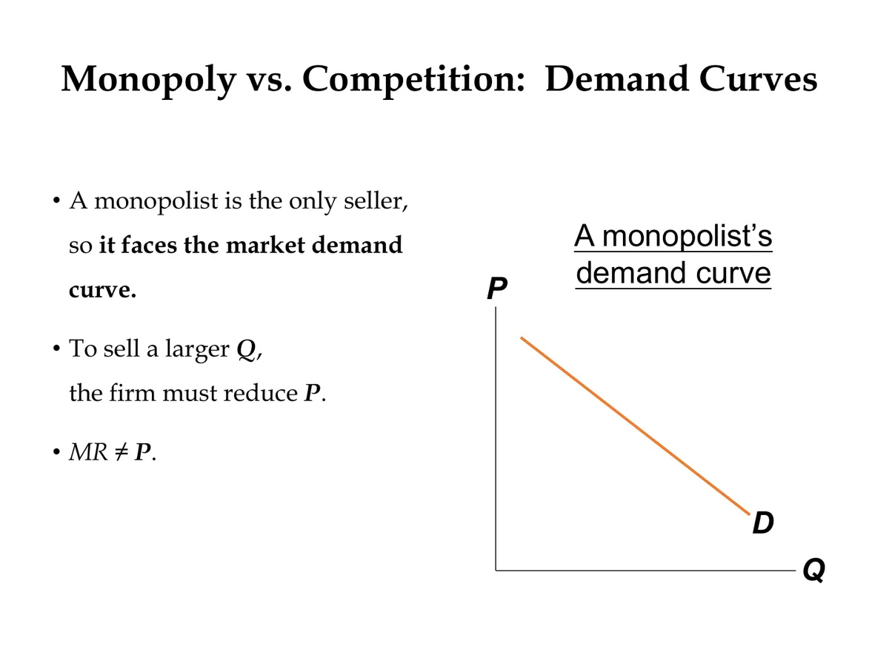
同一组坐标，换成垄断者。
因为它是唯一卖者，它的需求曲线就是市场需求曲线——向右下倾斜。
推论：想多卖，就必须降价。价格不是它可以随便写下的数字，而是沿需求曲线的一个选择：定高价，卖得少；定低价，卖得多。
于是 MR ≠ P，与竞争厂商正好相反。
图中：横轴 Q、纵轴 P，一条向右下倾斜的橙色 D，标注"a monopolist's demand curve"。
老师补充：需求曲线对垄断者既是约束也是机会。约束是它不能同时要高价格和大销量；机会是它可以挑那个让利润最大的点。下面几页就在找这个点。
幻灯片原文 / 板书
Monopoly vs. Competition: Demand Curves • A monopolist is the only seller, so it faces the market demand curve. • To sell a larger Q, the firm must reduce P. • MR ≠ P. D P Q A monopolist’s demand curve
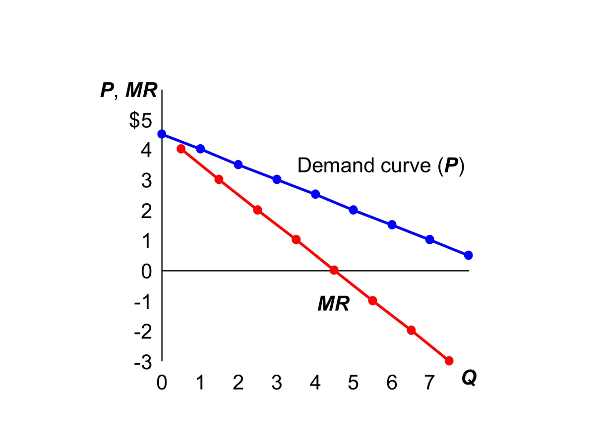
这张图把 MR ≠ P 画出来，请学会读它。
- 横轴 Q（0 到 8），纵轴 P 与 MR（从 \$5 一直到 −\$3，注意下方有负数区）。
- 蓝线：需求曲线（Demand curve），向右下倾斜，Q = 0 时约 \$4.5。
- 红线：边际收益（MR），起点与需求曲线几乎重合，但下降速度约是它的两倍。
读几个点：Q = 1 时 MR ≈ \$4；Q = 3 时 MR ≈ \$2；Q = 4 时 MR ≈ \$1；Q = 5 时 MR = 0；再往后转负，Q = 6 时 −\$1。
最关键的一眼是：MR 可以是负数。为什么？靠降价换来的那点销量，抵不过所有旧单位一起降价造成的损失。
幻灯片原文 / 板书
-3 -2 -1 0 1 2 3 4 5 0 1 2 3 4 5 6 7 Q P, MR Demand curve (P) MR $
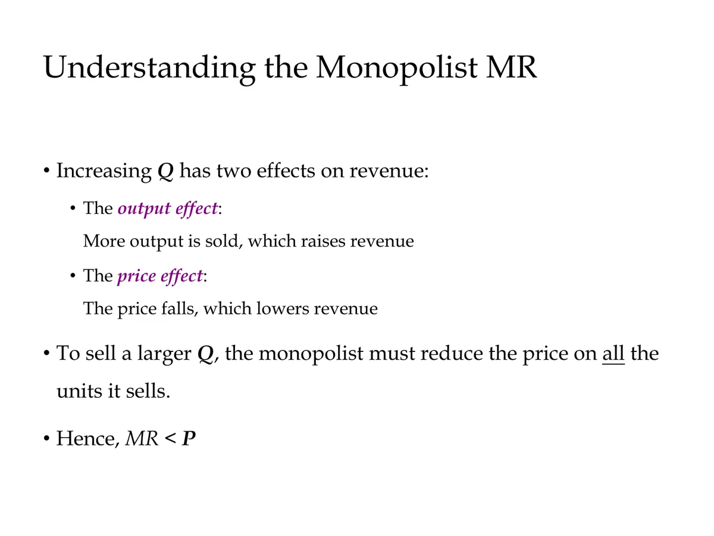
为什么 MR < P？多卖一单位有两个方向相反的效果：
- 产量效应（output effect）：多卖出一单位，收入增加，增加量约等于该单位的价格。
- 价格效应（price effect）：为了卖出去必须降价，而这次降价作用于此前卖出的所有单位——不只新加的那一单位。
净效果 = 产量效应 − 价格效应，所以 MR < P。产量越大，价格效应压得越重，MR 掉得越快——这就是第 7 页红线更陡的原因。
老师补充（考点）：写成公式是 MR = P(1 + 1/ε)，ε 是需求价格弹性（取正值）。含义有三层：
- 需求越有弹性（ε 越大），MR 越接近 P；
- ε = 1 时，MR = 0；
- 需求缺乏弹性时 MR 为负，多卖反而少收钱。
所以垄断者只在需求富有弹性的区间定价。这也解释了他为什么"不肯"生产到需求曲线与 MC 相交的地方。
幻灯片原文 / 板书
Understanding the Monopolist MR • Increasing Q has two effects on revenue: • The output effect: More output is sold, which raises revenue • The price effect: The price falls, which lowers revenue • To sell a larger Q, the monopolist must reduce the price on all the units it sells. • Hence, MR < P
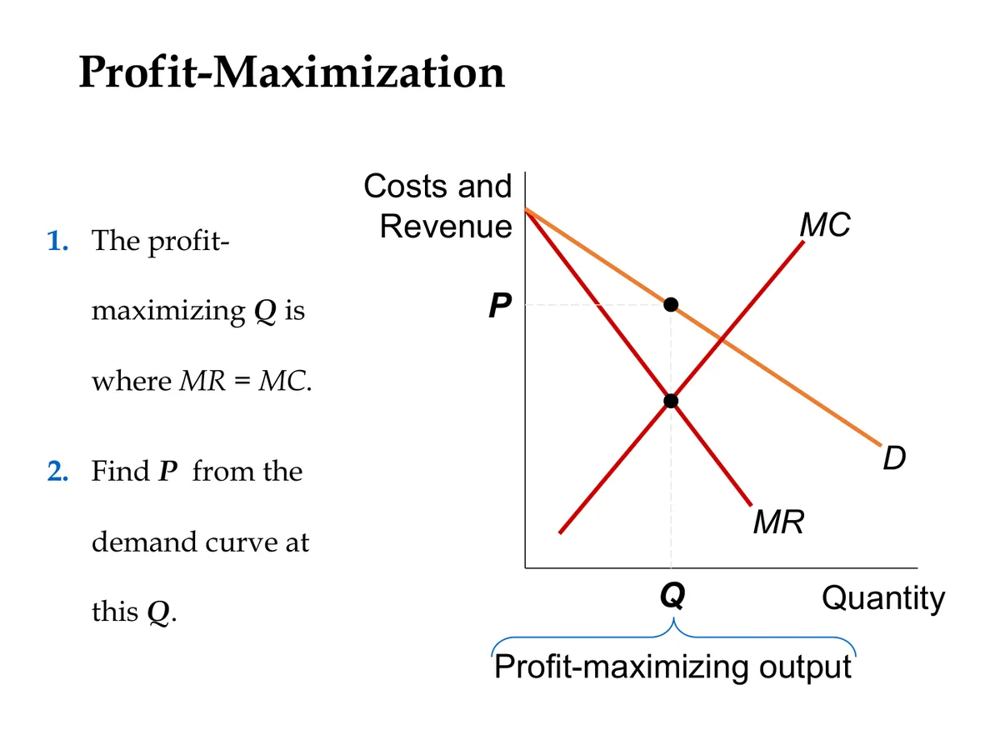
利润最大化的两步法，顺序不能颠倒：
- 先定数量：找 MR = MC 的那个 Q。图中红色 MR 与红色 MC 的交点，向下作虚线得到 Q。
- 再定价格：从这个 Q 向上走到需求曲线，读到的高度才是 P。所以 P > MC。
图中：横轴 Quantity，纵轴 Costs and Revenue。橙色 D 向右下；红色 MR 更陡地向右下；红色 MC 向右上；D 与 MR 同起点，MR 在下方。虚线从 MR = MC 的交点向上，落在 D 上，得到 (Q, P)。下方蓝色大括号标出"profit-maximizing output"。
常见错解：把 D 与 MC 的交点当成垄断者的产量。那是竞争的结果，不是垄断的结果——两者相差整整一段。
幻灯片原文 / 板书
Profit-Maximization 1. The profit- maximizing Q is where MR = MC. 2. Find P from the demand curve at this Q. Quantity Costs and Revenue MR D MC Profit-maximizing output P Q
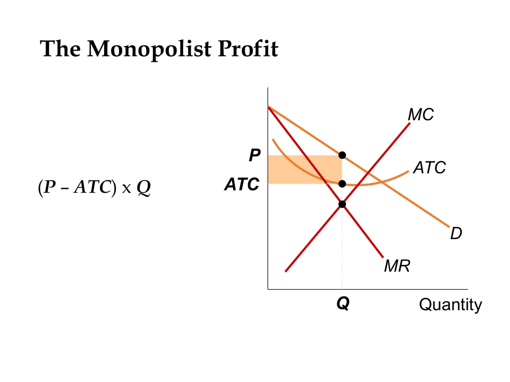
利润怎么读：利润 = (P − ATC) × Q。
图上多了一条橙色 U 形的 ATC 曲线。四步：
- 由 MR = MC 定出 Q；
- 向上到需求曲线得 P；
- 在同一个 Q 上读到 ATC；
- P 与 ATC 之间的竖直距离是单位利润，乘 Q 就是总利润——图中橙色矩形。
两点提醒：
幻灯片原文 / 板书
The Monopolist Profit (P – ATC) x Q Quantity ATC D MR MC Q P ATC
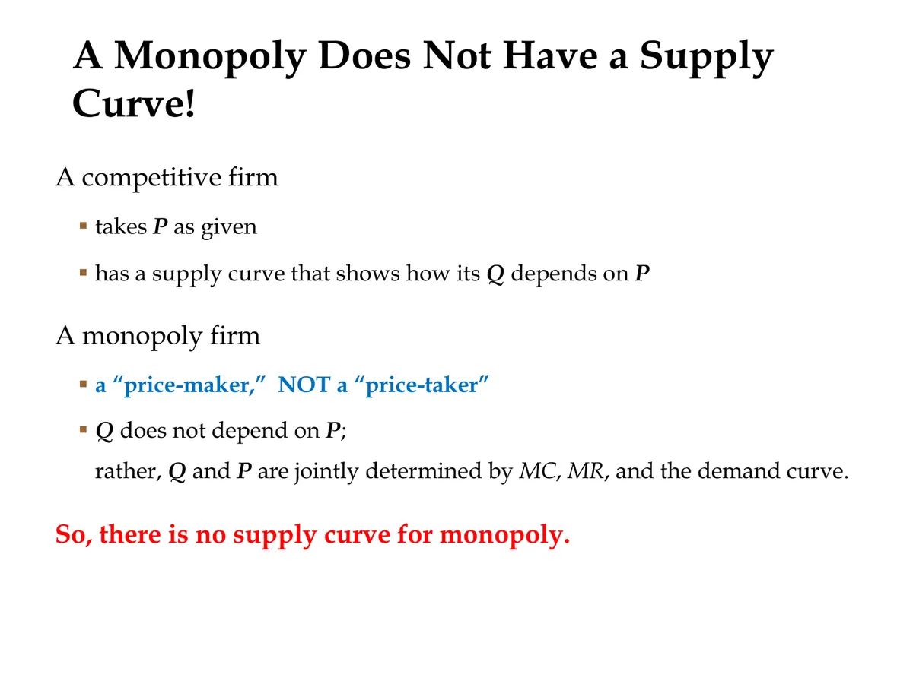
这一页是一个概念结论：垄断者没有供给曲线。
对比着看：
- 竞争厂商：把价格当给定（takes P as given），供给曲线回答的是"价格为 \$5 时我供多少"——P 是自变量、Q 是因变量。
- 垄断者：是价格制定者（price-maker），不是价格接受者。它的 Q 不随某个外生价格变动；Q 和 P 是联立决定的，由 MC、MR 和需求曲线一起定出来。
供给曲线这个概念的前提是"价格外生、数量响应"。这个前提在垄断者身上不成立，所以问"垄断者在价格 P 下供给多少"本身就是个无意义的问题。
考点：这句话常出判断题——"垄断者也有供给曲线，只是更陡"，错。
幻灯片原文 / 板书
A Monopoly Does Not Have a Supply Curve! A competitive firm § takes P as given § has a supply curve that shows how its Q depends on P A monopoly firm § a “price-maker,” NOT a “price-taker” § Q does not depend on P; rather, Q and P are jointly determined by MC, MR, and the demand curve. So, there is no supply curve for monopoly.
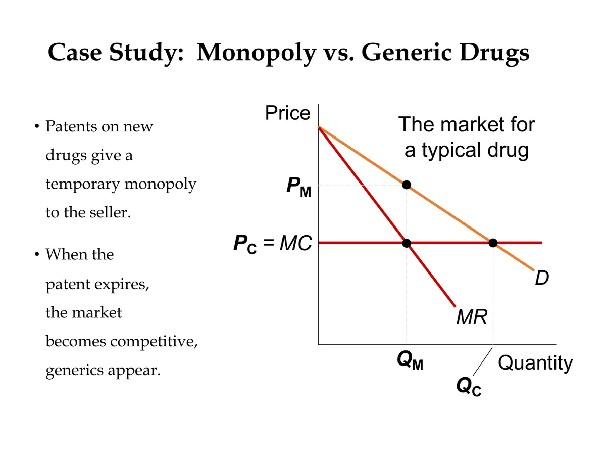
案例：专利药与仿制药（generic drugs）。
- 新药在专利期内，卖方拥有临时垄断：需求 D 向下，MR 在下方，MR = MC 定出 Q_M，回到需求曲线得 P_M。
- 专利到期后，仿制药涌入，市场变竞争：价格被压到 P_C = MC，产量扩到 Q_C（D 与 MC 的交点）。
读图：MC 被画成一条水平线——多生产一片药的边际成本很低，高的是研发的固定成本。所以竞争价 P_C 很低、竞争量 Q_C 很大。
老师补充：这张图把专利制度的两面都画出来了。没有专利，没人愿意掏研发费（仿制者可以立刻压价）；有专利，专利期内就有第 14 页那个三角形。专利期限正是"动态收益"与"静态损失"之间的一个政策旋钮。
幻灯片原文 / 板书
Case Study: Monopoly vs. Generic Drugs • Patents on new drugs give a temporary monopoly to the seller. • When the patent expires, the market becomes competitive, generics appear. MC Quantity Price D MR PM QM PC = QC The market for a typical drug
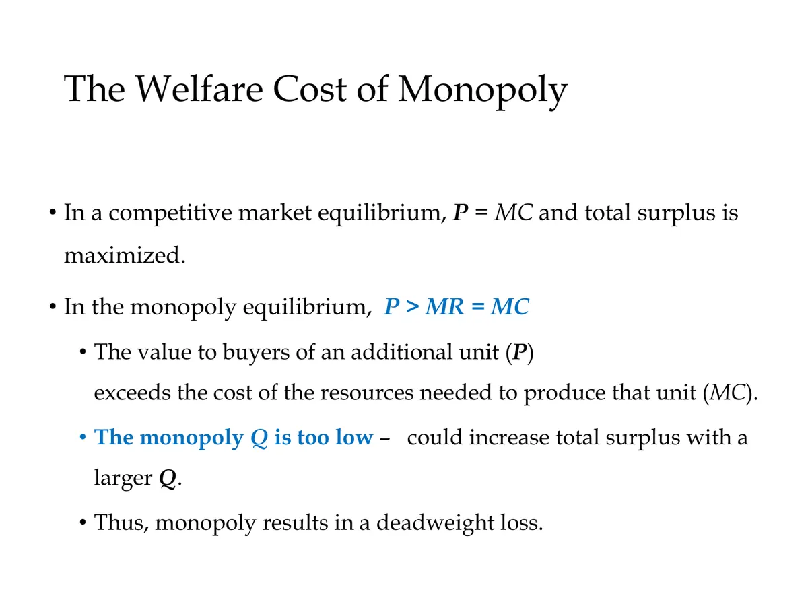
福利分析，先讲逻辑，再看图。
- 竞争均衡：P = MC，最后一单位对买者的价值正好等于生产它的资源成本，总剩余最大。
- 垄断均衡：P > MR = MC，于是 P > MC。买者对下一单位的估值（P）高于生产它的成本（MC）。
- 含义：Q_M 到 Q_E 之间的那些单位，本来买卖双方都能获益，却没有被生产出来。垄断产量太少。
- 因此产生无谓损失（deadweight loss）。
这里必须分清两件事：高价把钱从买者转到卖者手里，那是转移，不是损失；真正的损失是那些没有发生的交易。
幻灯片原文 / 板书
The Welfare Cost of Monopoly • In a competitive market equilibrium, P = MC and total surplus is maximized. • In the monopoly equilibrium, P > MR = MC • The value to buyers of an additional unit (P) exceeds the cost of the resources needed to produce that unit (MC). • The monopoly Q is too low – could increase total surplus with a larger Q. • Thus, monopoly results in a deadweight loss.
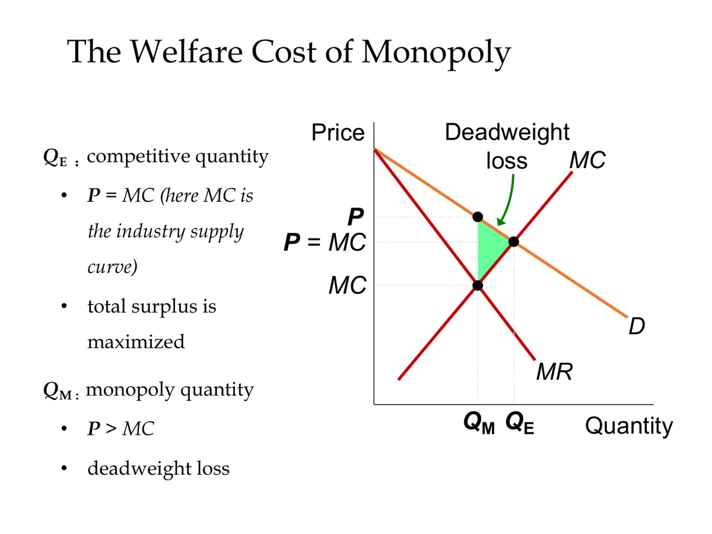
无谓损失的图形，这一页要能自己画出来。
坐标：纵轴 Price，横轴 Quantity。橙色 D 向右下；红色 MR 更陡地向右下；红色 MC 向右上。
- Q_M：MR 与 MC 的交点，垄断产量。
- Q_E：D 与 MC 的交点，竞争产量。
- 绿色三角形 = 无谓损失：左边竖边立在 Q_M 处，高度是 D 与 MC 的差（也就是 P 与 MC 的差），向右收敛于 Q_E。
左侧三个价格标签容易看混，对照着读：最上面的 P 是垄断价（Q_M 处的需求高度）；中间的 P = MC 是竞争价（Q_E 处）；最下面的 MC 是 Q_M 处的边际成本。这三个高度差，就是那个三角形的边。
幻灯片原文 / 板书
P = MC Deadweight loss P MC The Welfare Cost of Monopoly QE ：competitive quantity • P = MC (here MC is the industry supply curve) • total surplus is maximized QM : monopoly quantity • P > MC • deadweight loss Quantity Price D MR MC QM QE
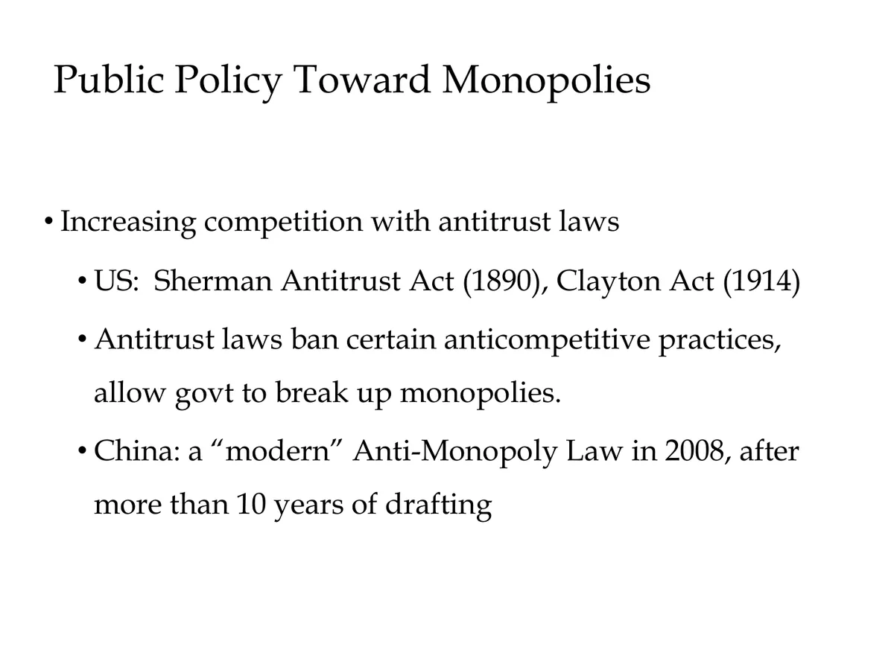
第一类公共政策：用反垄断法（antitrust laws）增加竞争。
- 美国：Sherman Antitrust Act（1890）、Clayton Act（1914）。
- 内容：禁止某些反竞争做法（合谋定价、掠夺性定价、排他性交易等），并授权政府拆分垄断企业。
- 中国：2008 年施行《反垄断法》，此前草案讨论了十多年。课件给"现代"加了引号，意思是它建立得晚，但框架与国际接轨。
老师补充：反垄断法通常管三件事——垄断协议（几家一起定价）、滥用市场支配地位、经营者集中（并购审查）。它管的是行为，不完全是"大"：企业大而有效率并不违法，用手段把对手挤出去才违法。
幻灯片原文 / 板书
Public Policy Toward Monopolies • Increasing competition with antitrust laws • US: Sherman Antitrust Act (1890), Clayton Act (1914) • Antitrust laws ban certain anticompetitive practices, allow govt to break up monopolies. • China: a “modern” Anti-Monopoly Law in 2008, after more than 10 years of drafting
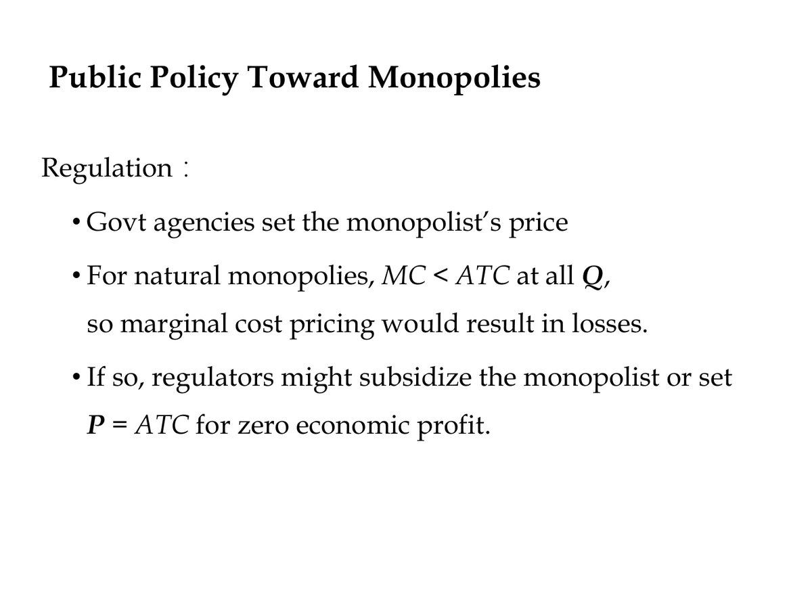
第二类：政府管制（regulation）——由管制机构直接给垄断者定价。
自然垄断的麻烦在于 MC < ATC 对所有 Q 都成立（固定成本大，ATC 一路下降）。如果按效率原则搞边际成本定价（P = MC），价格就低于平均成本，厂商每卖一单位都亏钱，最后退出。
于是只剩两条路：
- 补贴：政府补上亏损，让价格停在 P = MC。问题是补贴要财政出钱，而且亏损被兜底之后，厂商没有动力压成本。
- 平均成本定价（P = ATC）：经济利润为零，厂商不亏不赚、能自我维持。问题是成本越高、核定的价格越高，等于奖励低效率。
考点：这是一道标准的"两难"——效率要求 P = MC，生存要求 P ≥ ATC，自然垄断下二者不可兼得。
幻灯片原文 / 板书
Public Policy Toward Monopolies Regulation： • Govt agencies set the monopolist’s price • For natural monopolies, MC < ATC at all Q, so marginal cost pricing would result in losses. • If so, regulators might subsidize the monopolist or set P = ATC for zero economic profit.
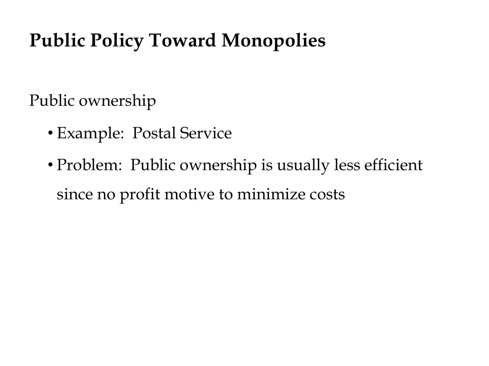
第三类：公有化（public ownership）——政府自己经营。例子：邮政服务（Postal Service）。
问题：没有利润动机去最小化成本，通常效率更低。软预算约束、编制、多重政治目标，都会把成本抬上去。
老师补充（还有第四类答案：什么都不做）：熊彼特（Schumpeter）式的论点是，垄断利润是创新的奖品——今天的垄断者往往是昨天创新竞赛的赢家，而它自己正被下一个创新者威胁。只用静态的三角形去否定它，可能漏算了动态收益。这场争论没有定论，你要能说出双方各自的账。
幻灯片原文 / 板书
Public Policy Toward Monopolies Public ownership • Example: Postal Service • Problem: Public ownership is usually less efficient since no profit motive to minimize costs
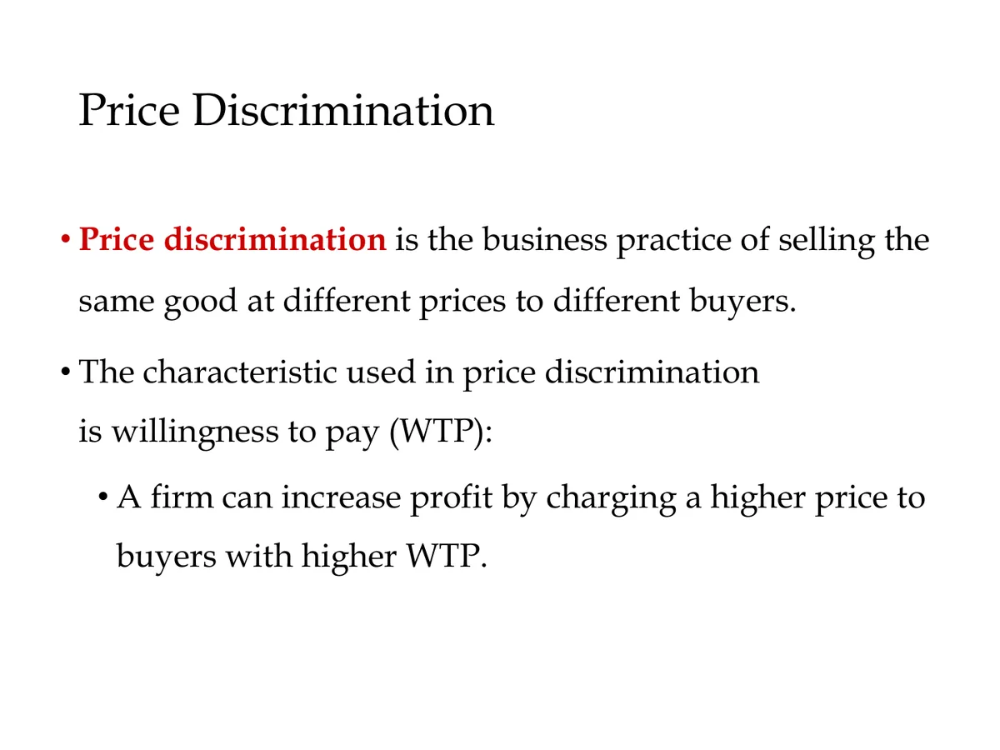
转向价格歧视（price discrimination）：把同一件商品，以不同价格卖给不同买者。
关键变量是支付意愿（willingness to pay，WTP）：每个买者心里都有一个最高价。统一定价时，厂商只能取一个折中价——WTP 高的人被"便宜"了，WTP 低的人被挡在门外。
价格歧视的思路：对 WTP 高的人收高价，对 WTP 低的人收低价，把两类人都拿下来，利润上升。
两个前提（后面反复用）：能识别谁的 WTP 高；不能转售——否则低价买家会把货倒卖给高价买家，价差被套利抹平。
幻灯片原文 / 板书
Price Discrimination • Price discrimination is the business practice of selling the same good at different prices to different buyers. • The characteristic used in price discrimination is willingness to pay (WTP): • A firm can increase profit by charging a higher price to buyers with higher WTP.
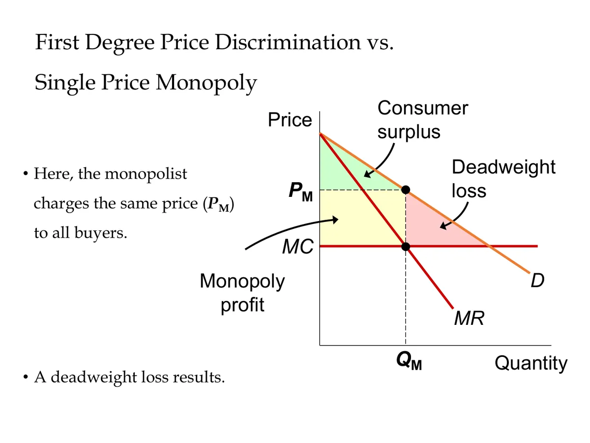
先看基准：单一价格垄断（single price monopoly），所有人付同一个 P_M。
读图（注意这一页把 MC 画成了水平线）：
- 绿色三角形 = 消费者剩余：P_M 以上、需求曲线以下、到 Q_M 为止。
- 黄色矩形 = 垄断利润：(P_M − MC) × Q_M。
- 粉色三角形 = 无谓损失：Q_M 到 Q_E 之间，需求曲线与 MC 之间的部分。
结论：统一定价下，一部分剩余归消费者，一部分归厂商，还有一块谁也没拿到——被"没发生的交易"浪费掉了。下一张就是把这块抢回来。
幻灯片原文 / 板书
Consumer surplus Deadweight loss Monopoly profit First Degree Price Discrimination vs. Single Price Monopoly • Here, the monopolist charges the same price (PM) to all buyers. • A deadweight loss results. MC Quantity Price D MR PM QM
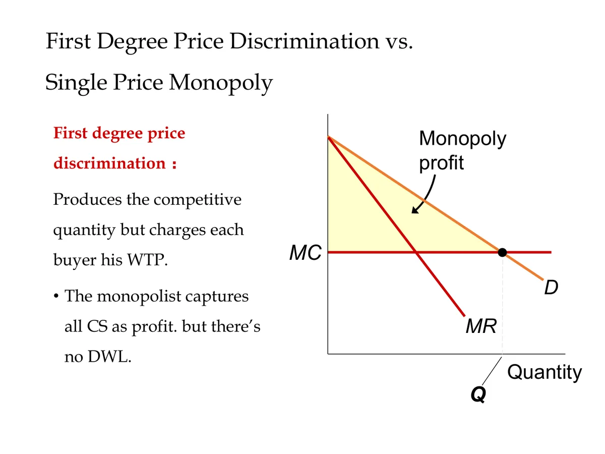
换成一级价格歧视（first degree，完全价格歧视）：每一单位、每一个买者，都收他正好愿意付的最高价。
对照上一页，三个变化：
- 产量扩到 Q_E——D 与 MC 的交点，也就是竞争产量。因为每单位单独定价，"降价会拉低前面所有单位的价格"这个价格效应消失了，厂商的边际收益实质上就是需求曲线。
- 买者剩余被全部榨干：D 与 MC 之间的整个黄色三角形都变成厂商利润。
- 没有无谓损失：所有 P > MC 的单位都生产了。
这是全讲最漂亮的一课：效率与分配是两件事。一级价格歧视让总剩余达到最大（效率满分），但买者一分不剩（公平零分）。
幻灯片原文 / 板书
Monopoly profit First Degree Price Discrimination vs. Single Price Monopoly First degree price discrimination： Produces the competitive quantity but charges each buyer his WTP. • The monopolist captures all CS as profit. but there’s no DWL. MC Quantity D MR Q
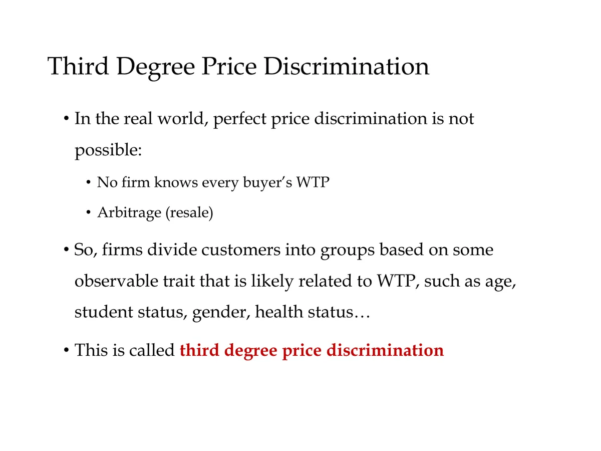
现实中为什么做不到一级？两个障碍：
- 信息：没有厂商知道每个买者的 WTP，逐个谈判的成本高得离谱。
- 套利（arbitrage）：能低价买到的人会转手倒卖，价差被抹平。
折中办法：按某个可观测、且与 WTP 相关的特征把顾客分组——年龄、学生身份、性别、健康状况……再对不同组收不同价。这叫三级价格歧视（third degree）。
老师补充：分组标准要同时满足三条——可观测（能验证）、与 WTP 相关（否则分组无意义）、难转售（否则套利）。学生证之所以好用，正是因为它三条都占。
幻灯片原文 / 板书
Third Degree Price Discrimination • In the real world, perfect price discrimination is not possible: • No firm knows every buyer’s WTP • Arbitrage (resale) • So, firms divide customers into groups based on some observable trait that is likely related to WTP, such as age, student status, gender, health status… • This is called third degree price discrimination
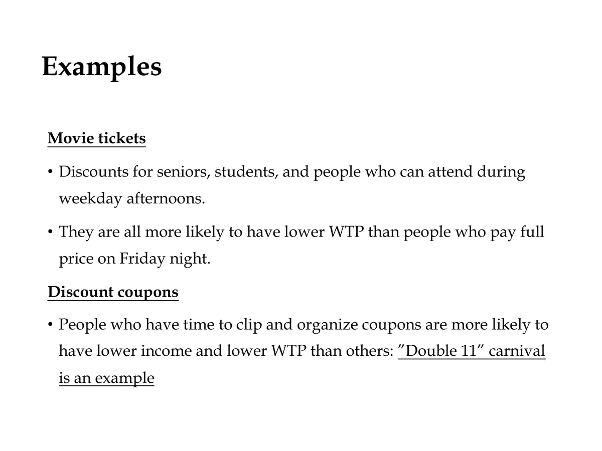
两个现实例子。
电影票：对老人、学生、以及能在工作日下午来看片的人打折。为什么？这些人群的 WTP 系统性更低——周五晚上按原价买票的人，是"时间贵、选择少"的人；退休老人和工作日下午有空的人，机会成本低，愿付的价格也低。折扣不是慈善，是把低 WTP 的人从"不买"变成"买"。
优惠券（discount coupons）：愿意花时间剪券、整理券的人，收入通常更低、WTP 也更低。课件点了"双十一"：复杂的满减规则本身就是一道门槛——肯研究规则的人，正是对价格更敏感的人。
老师补充：优惠券的妙处是自我选择（self-selection）：厂商不必花钱去识别谁穷谁富，让顾客自己暴露身份。
幻灯片原文 / 板书
Examples Movie tickets • Discounts for seniors, students, and people who can attend during weekday afternoons. • They are all more likely to have lower WTP than people who pay full price on Friday night. Discount coupons • People who have time to clip and organize coupons are more likely to have lower income and lower WTP than others: ”Double 11” carnival is an example
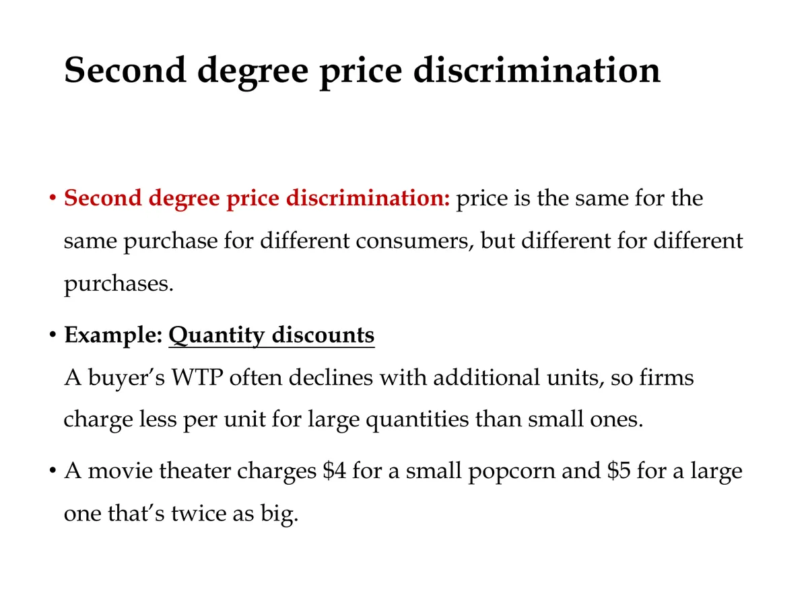
二级价格歧视（second degree）：不同消费者买同样的东西付同样的价，但买多买少、单价不同。区别在于——三级按"你是谁"分组，二级按"你买多少"分档。
典型形式是数量折扣：买者的 WTP 随单位数递减（第一杯水解渴，第四杯就一般了），所以厂商对大额购买收更低的单价。
课件的例子：电影院小桶爆米花 \$4，大桶（分量是小桶的两倍）\$5。看起来只贵了 \$1，可第二倍的量只收 \$1——边际价格远低于平均价格，正好对上"第二份的 WTP 更低"。
老师补充：套餐、阶梯电价、会员等级都是这一套。注意它不需要识别身份，只需设计出一张让顾客自己选的价目表。
幻灯片原文 / 板书
Second degree price discrimination • Second degree price discrimination: price is the same for the same purchase for different consumers, but different for different purchases. • Example: Quantity discounts A buyer’s WTP often declines with additional units, so firms charge less per unit for large quantities than small ones. • A movie theater charges $4 for a small popcorn and $5 for a large one that’s twice as big.